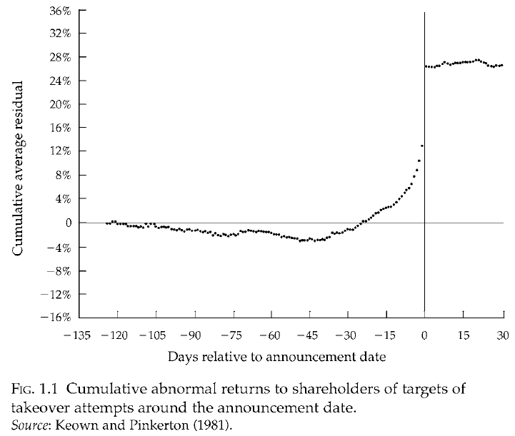

關於市場有效性的實證分析
研究方法：兩種基本思路
- 當事關某種證券基本價值的信息傳播到市場上時，該種證券的價格是否會快速準確地做出反應，並將這些消息的影響體現於價格之中。我們之後會提到，行爲金融學派既否定快速也否定準確，基本面分析和技術面分析只否定反應的快速，他們認爲在人理性的前提下，準確性是可以保證的。
- 如果沒有影響證券基本價值的消息變化，價格不會有變化。在有效市場中，引起價格變化的是“事關證券基本價值的信息變化”，而市場行爲的變化，諸如、對證券供給與需求的變化不會導致證券價格的變動。
弱式有效市場
Fama在1965年的研究表明股票價格大體上遵循隨機遊走規律，對複雜的交易規則檢驗同樣無效。
半強式有效市場
觀察與樣本公司有關的消息事件（盈利分紅公告、公司併購、新股發行、股票回購）發生後，其股價是馬上做出反應還是在幾天後做出反應（事件研究法）。
Keown和Pinkerton在1981年研究了目標公司被舉牌收購前後股價表現。

Scholes的研究表明股票價格取決於近似替代品的相對價值，而不是供給量（替代品對於保證市場有效性的關鍵作用），所以賣出大宗股票，特別是有無特別信息的投資者賣出，對股價沒有實質性的影響。
強式有效市場
研究與樣本公司有關的消息事件發生之前其股價的反應。
結論
目前的研究結果表明：
- 很多但不是所有金融品種的檢驗結果支持弱式有效市場假設
- 對半強式有效市場假設的檢驗存在分歧
- 幾乎沒有哪個金融品種的檢驗支持強式有效市場假設